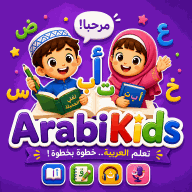

Arabic Alphabet for Kids: How to Teach It Step by Step
The Arabic alphabet has 28 letters, is written from right to left, and most letters change shape depending on where they sit in a word. That sounds like a lot for a child, but Arabic has a gift for learners: many letters share the same basic shape and differ only by their dots. Teach the letters in these families, sounds first and names second, and children usually make fast progress.
- Five things to know before you start
- Teach in letter families, not alphabetical order
- The vowels that unlock reading
- A six-week plan
- Writing: tips for small hands
- Playful activities
- Mistakes to avoid
1. Five things to know before you start
- 28 letters, all consonants or long vowels. Short vowels are written as small marks above or below the letters.
- Right to left: reading and writing start on the right side of the page.
- Joined writing: letters connect to each other in a word, like cursive handwriting.
- Up to four shapes per letter: isolated, at the start, in the middle and at the end of a word. For example ع looks different in عين, بعد and سمع. The core shape stays recognisable.
- Six letters never join to the next one: ا د ذ ر ز و. After them, the next letter starts fresh. Children find it helpful to learn this short list early.
2. Teach in letter families, not alphabetical order
Many Arabic letters share the same skeleton and are distinguished by the number and position of dots. Learning them together turns three hard letters into one shape plus a simple rule about dots:
| Family (same shape) | Sounds |
|---|---|
| ب ت ث | b, t, th |
| ج ح خ | j, ḥ, kh |
| د ذ | d, dh |
| ر ز | r, z |
| س ش | s, sh |
| ص ض | ṣ, ḍ |
| ط ظ | ṭ, ẓ |
| ع غ | ʿ, gh |
| ف ق | f, q |
The remaining letters, ا ك ل م ن ه و ي, have distinct shapes. Note that ن and ي look very similar to the ب family at the start of a word, which is a nice discovery for children once they can read short words.
3. The vowels that unlock reading
Short vowels are small marks called harakat. Children's books and school texts include them, and they are the key to reading aloud:
| Mark | Name | Sound | Example |
|---|---|---|---|
| بَ | fatha (above) | short "a" | ba |
| بِ | kasra (below) | short "i" | bi |
| بُ | damma (above) | short "u" | bu |
| بْ | sukun | no vowel | b (as in أَبْ) |
| بّ | shadda | doubled letter | bb |
The long vowels are letters: ا (long "aa"), و (long "uu") and ي (long "ii"). Once a child knows a handful of letters and the three short vowels, they can read hundreds of syllables and their first real words: بَابٌ (door), دَارٌ (house), قَلَمٌ (pen).
4. A six-week plan
This plan suits children of about 5 to 7, with 15 minutes a day. Older children can move faster; younger ones can take two weeks per step.
| Week | Focus | Activities |
|---|---|---|
| 1 | ا ب ت ث + fatha | Sounds with pictures, trace isolated shapes, read بَ تَ ثَ |
| 2 | ج ح خ د ذ + kasra and damma | Dot games, read syllables بِ بُ دَ دِ دُ |
| 3 | ر ز س ش | First words: رَسَمَ, شَرِبَ; learn the six non-joining letters |
| 4 | ص ض ط ظ ع غ | Pronunciation practice, word-picture matching |
| 5 | ف ق ك ل م ن ه و ي | Long vowels, read short words with pictures |
| 6 | Review + joined forms | Find letters in words, read and write three-letter words |
5. Writing: tips for small hands
- Start on the right. Put a small green dot on the right edge of the line as a "start here" sign.
- Body first, dots last. Children write the main stroke of the letter, then add the dots or marks.
- Use a baseline. Most letters sit on the line, but some tails go below it (ج ح خ ع غ م at the end of a word, and ر ز و). Lined paper with a clear baseline helps.
- Big before small. Trace letters in the air, in sand or with a finger on the table before using a pencil.
- Short sessions. Five minutes of careful writing is better than a full page of tired letters.
6. Playful activities
- Letter of the day: find it on food packets, street signs and book covers.
- Dot detectives: show a letter skeleton without dots, and let your child add one, two or three dots to make different letters.
- Sand and dough: write letters in a tray of sand or salt, or shape them with playdough.
- Picture memory: pairs of cards with a letter and an object that starts with it (ب and a door, ق and a pen).
- Syllable bingo: call out "ba, bi, bu" and your child covers the right card.
7. Mistakes to avoid
- Teaching only the alphabet song. Reciting the letters in order is fun but does not teach reading. Mix sounds, shapes and syllables.
- Skipping the short vowels. Without harakat, children can name letters but cannot read words.
- All four forms at once. Start with isolated shapes, then introduce joined forms gradually through real words.
- Too much copying, too early. Long writing exercises before the shapes are familiar lead to tears. Reading and play first.
Free resources on Kids Learning Hub
Print our Arabic letter tracing worksheets (all 28 letters), turn letters into colouring pages with giant letter outlines, and read our bedtime stories in Arabic together once your child can read short words.

Learn the 28 Arabic letters with tracing, sounds, games and stories — offline and free.
Group the letters in families, teach sounds before names, add the three short vowels early, and keep it playful. Within weeks, your child will be reading their first Arabic words with pride.
Frequently asked questions
What is the best order to teach the Arabic alphabet?
Teach letters in shape families, such as ب ت ث or ج ح خ, rather than strict alphabetical order. Introduce the short vowels early so children can read syllables and simple words from the first weeks.
How long does it take a child to learn the Arabic letters?
With about 15 minutes a day, many children aged 5 to 7 recognise all 28 letters and read simple vowelled words in six to ten weeks. Writing all the joined forms fluently takes longer.
Should children learn letter names or sounds first?
Sounds first. Knowing that ب says "b" lets a child blend syllables and read words. Letter names can be added once the sounds are secure.